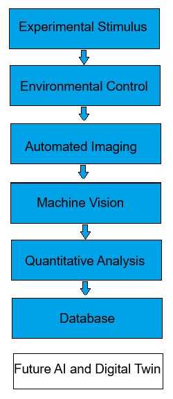

Rather than developing isolated instruments, Aurelia BioSystems combines environmental control, automation, imaging and software into one modular research platform.
A modular research platform for studying the effects of controlled environmental and physical stimuli on biological systems through automation, machine vision and quantitative data analysis.
Growth Pods, Seed Analysis Stations, CNC experimental Platform, Temperature Chamber, Acoustic Module
ESP32, Arduino Platform, Embedded Control, Remote Dashboard, Environmental Control
Image Processing, Machine Vision, Time-lapse Analysis, Digital Twin (planned), AI Optimisation (planned)

Each subsystem has been designed to operate independently or as part of a larger distributed laboratory. Researchers can begin with a single experiment and expand to multiple autonomous growth chambers connected through the same software platform.
Independent control of temperature, humidity, lighting intensity, lighting schedule and nutrient circulation allows repeatable experiments under precisely defined conditions.
ESP32 and Arduino controllers supervise sensors, actuators, pumps, heaters, LED lighting and communication while providing reliable long-term autonomous operation.
Microscope images are analysed using computer vision algorithms to measure biological growth, identify objects, track changes over time and create quantitative datasets.
Motorised XYZ positioning enables automatic revisiting of predefined locations, producing long-term time-lapse recordings with minimal operator intervention.
Some modules can be monitored remotely through a browser interface, enabling experiments to continue for weeks while researchers supervise them from any location. In some cases a local PC is needed due to requirements for high computational power or big storage capacity.These systems also can be controlled remotely.
Images and environmental measurements are stored in structured datasets suitable for future AI-assisted analysis, predictive modelling and optimisation of biological processes.
Images and environmental measurements are stored in structured datasets suitable for future AI-assisted analysis, predictive modelling and optimisation of biological processes.
The platform is modular by design. New sensors, optical systems, environmental controls and AI algorithms can be integrated without redesigning the complete laboratory.
Explore the Platform